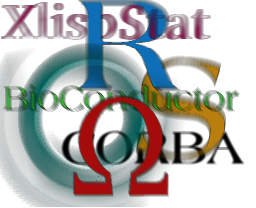

About R
Download, Packages
R Project
Documentation
Misc
R-related Conferences
The R project actively supports two conference series, organized regularly by members from the R community: useR! - providing a forum to the R user community - and DSC - a platform for developers of statistical software. A rough outline of the format for the respective conferences is given below; both conference formats were developed by the Austrian Association for Statistical Computing (AASC) in cooperation with the R Foundation for Statistical Computing.
R-related conferences are coordinated by the "R Foundation Conference Committee" (RFCC) currently consisting of Torsten Hothorn (Universität Zürich) and Achim Zeileis (Universität Innsbruck) plus ex officio secretary and treasurer of the R Foundation. The RFCC can be contacted by email at R-conferences@r-project.org.
useR! - International R User Conference
 This is the main meeting of the R user and developer community, its program consisting of both invited and user-contributed presentations:
This is the main meeting of the R user and developer community, its program consisting of both invited and user-contributed presentations:
- The invited keynote lectures cover a broad spectrum of topics ranging from technical and R-related computing issues to general statistical topics of current interest.
- The user-contributed presentations are submitted as abstracts prior to the conference and may be related to (virtually) any R-related topic. The presentations are typically organized in sessions of either broad or special interest, which also comprise a "free" discussion format. Such a discussion format not only provides a forum for software demonstrations and detailed discussions but also supports the self-organization of the respective communities.
Usually, no proceedings are published for useR! conferences.
| useR! 2004, Vienna, Austria: | homepage, local copy |
| useR! 2006, Vienna, Austria: | homepage, local copy |
| useR! 2007, Ames, IA, USA: | homepage, local copy |
| useR! 2008, Dortmund, Germany: | homepage, local copy |
| useR! 2009, Rennes, France: | homepage, local copy |
| useR! 2010, Gaithersburg, MD, USA: | copy of homepage |
| useR! 2011, Coventry, UK: | homepage, local copy |
| useR! 2012, Nashville, TN, USA: | homepage, local copy |
| useR! 2013, Albacete, Spain: | homepage, local copy |
| useR! 2014, Los Angeles, CA, USA: | homepage |
| useR! 2015, Aalborg, Denmark: | homepage |
DSC - Directions in Statistical Computing
 DSC is a conference for the developers of statistical software and researchers in statistical computing which is somewhat focused on but not exclusively devoted to R. It aims at providing a platform for exchanging ideas about developments in statistical computing (rather than `only' the usage of statistical software for applications). As the associated papers are often technical and difficult to publish even in computational statistical journals, the DSC publishes post-conference proceedings of the papers that were accepted for publication.
| DSC 1999, Vienna, Austria: | homepage, local copy |
| DSC 2001, Vienna, Austria: | homepage, local copy, proceedings |
| DSC 2003, Vienna, Austria: | homepage, local copy, proceedings |
| DSC 2005, Seattle, USA: | homepage, local copy |
| DSC 2007, Auckland, New Zealand: | homepage, local copy, proceedings have been published as issue 24/2 of Computational Statistics |
| DSC 2009, Copenhagen, Denmark: | homepage, local copy |